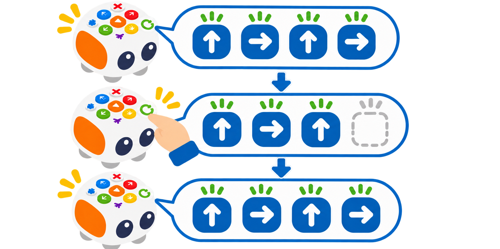

Tale-Bot Pro: esborrar una ordre i depurar el recorregut
Comparar la pulsació curta i llarga de Clear per retirar l’última ordre o buidar tot el programa abans de tornar-lo a provar.
🌱 Situació, repte i intenció
- Llegir la seqüència acumulada als indicadors de color.
- Distingir una pulsació de menys d’un segon d’una pulsació de més d’un segon.
- Corregir l’última ordre sense perdre la resta de la ruta, o esborrar tot el programa quan calga començar de nou.
- Executar només després de revisar el codi que s’ha tornat a introduir.
🎯 Aprenentatges i vocabulari
- Botó Clear amb esborrat de l’última ordre amb pulsació curta (<1 s).
- Esborrat de totes les ordres introduïdes amb pulsació llarga (>1 s).
- Indicadors de programació que reprodueixen el color de les ordres i s’apaguen quan s’ha buidat la seqüència.
- Depuració d’un programa físic abans d’executar-lo amb Play.
🧰 Materials i preparació
- Tale-Bot Pro carregat i amb una superfície plana per a la prova.
- Targetes de fletxes o una tira de programació en paper.
- Graella o mapa simple amb inici i destinació.
- Full de registre amb tres columnes: seqüència prevista, indicadors observats i recorregut executat.
Trieu una ruta segura de quatre ordres. Abans d’encendre el robot, acordeu quina ordre s’introduirà malament a propòsit i com la detectareu. Identifiqueu el botó Clear/X al model físic. El temps de pulsació és important: feu la demostració primer amb el grup i eviteu pressionar-lo de manera ambigua.
📅 Seqüència didàctica
Introduïu una ruta i llegiu-ne els indicadors
Desenvolupament del pas
Planifiqueu quatre ordres senzilles que facen arribar Tale-Bot a una destinació. Esborreu el programa anterior mantenint X més d’un segon. Introduïu només les tres primeres ordres; després de cada pulsació, assenyaleu l’indicador encés i afegiu una fletxa a la tira de paper. Encara no premeu Play.
Simuleu un error en l’última ordre
Desenvolupament del pas
Introduïu a propòsit una quarta ordre incorrecta i anoteu-la a la tira. Feu que una altra parella compare la ruta prevista amb els quatre indicadors. Abans de corregir-la, expliqueu què convé conservar: les tres ordres inicials.
Retireu només l’última ordre
Desenvolupament del pas
Premeu Clear breument, menys d’un segon. Comproveu que desapareix l’últim indicador i que els tres anteriors continuen visibles. Introduïu l’ordre correcta i confirmeu que la seqüència torna a tindre quatre passos. Si el resultat no és clar, pareu i reviseu els indicadors abans de continuar.

Executeu la seqüència corregida
Desenvolupament del pas
Premeu Play una sola vegada i observeu si el recorregut arriba a la destinació. Compareu-lo amb la tira de paper. Si l’error és en una ordre anterior, retireu amb pulsacions curtes les ordres des del final fins arribar-hi i torneu-les a introduir en ordre; també podeu esborrar-ho tot i començar de nou.
Proveu l’esborrat complet
Desenvolupament del pas
Després de la prova, manteniu Clear premut més d’un segon. Confirmeu que s’apaguen tots els indicadors. Introduïu tres ordres noves, comproveu-les amb la tira i executeu-les. Compareu quan és més útil esborrar només l’última ordre i quan convé buidar-ho tot.
🧪 Evidències i avaluació
Feu tres comprovacions: una pulsació curta després d’introduir almenys tres ordres; una pulsació llarga amb una seqüència visible; i una reprogramació que s’executa amb Play. Anoteu quins indicadors s’han apagat en cada cas i si les ordres conservades coincideixen amb el pla. Si la pulsació dura aproximadament un segon, repetiu la prova amb una durada clarament curta o llarga, sense afegir més ordres al mateix temps.
Preguntes per comprovar
- Què s’esborra amb una pulsació curta i què s’esborra amb una de llarga?
- Com sabem pels indicadors quantes ordres queden programades?
- Per què cal revisar els indicadors abans de prémer Play?
- En quin cas és millor corregir només l’última ordre? Quan començaríeu de nou?
- Quina diferència hi ha entre esborrar una ordre i reiniciar el robot?
✅ Evidències d’aprenentatge
- Conserveu la tira de la seqüència inicial i la corregida, una taula que compare Clear curt i llarg, i el resultat de l’execució final. L’evidència ha de mostrar que l’equip ha conservat les ordres útils en la correcció parcial i ha confirmat l’apagat dels indicadors en l’esborrat complet. No cal gravar veus ni fotografiar l’alumnat.
♿ Participació, accessibilitat i seguretat
Useu una tira de fletxes gran, pictogrames o ordres dites en veu alta per anticipar la seqüència. El temps es pot comptar amb «curt» i «mantín» abans de provar-lo amb el criteri inferior o superior a un segon. Repartiu els rols de programació, observació dels indicadors i registre. Manteniu el robot quiet durant la correcció i no pressioneu diverses tecles alhora.
🔗 Referents i adaptació
El curs oficial de Tale-Bot Pro de Matatalab especifica que Clear premut menys d’un segon elimina l’última ordre i mantingut més d’un segon esborra totes les ordres; també indica que els indicadors de programació s’apaguen quan la seqüència és buida. Els llindars són els publicats pel fabricant: en la pràctica, feu una pulsació clarament inferior o superior a un segon i comproveu el resultat en el vostre robot.